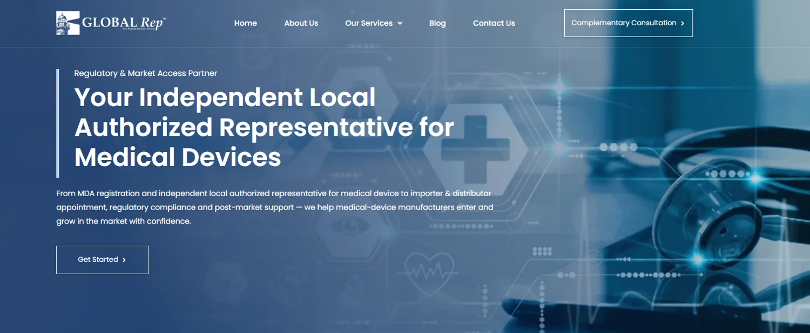

Global Rep: Supporting Medical Device Businesses from Market Entry to Growth in Malaysia

Established in 2019, Global Rep Sdn Bhd helps medical device manufacturers and local businesses navigate the regulatory requirements of the Malaysian healthcare market. Based in Penang, the company offers comprehensive medical device regulatory affairs support, from initial regulatory assessment and medical device registration to establishment licensing and ongoing compliance. As an independent local authorized representative for medical device manufacturers, Global Rep provides a local regulatory presence for international companies seeking to establish and expand their business in Malaysia.
One of Global Rep’s key strengths is its ability to support manufacturers beyond their initial market approval. By keeping regulatory representation separate from commercial distribution arrangements, Global Rep helps businesses retain flexibility when developing their local sales networks. Its team also assists with regulatory notifications, registration maintenance, post-market surveillance, and coordinating qualified importers and distributors, allowing manufacturers to manage their market presence with greater clarity.
For local establishments, Global Rep provides practical GDPMD certification and ISO 13485 certification consultancy, including quality system documentation, staff training, internal audit preparation and ongoing compliance assistance. With experience supporting clients from various international markets, the team combines Malaysian regulatory knowledge with hands-on guidance and clear communication. Whether you are entering Malaysia, growing an established device portfolio or planning expansion across ASEAN, Global Rep provides a dependable regulatory partnership aligned with your business objectives and operational needs.
Contact Global Rep Sdn Bhd - Local Authorized Representative for Medical Device
- Name: Global Rep Sdn Bhd - Local authorized representative for medical device
- Address: 107-2-06, Kompleks, Adorna Gold Complex, Jalan Gurdwara, Taman Windmill, 11030 George Town, Pulau Pinang
- Phone: +60 16-435 6716
- Working Hours: Monday - Sunday: 8.00 a.m - 8.00p.m
- Email: yourglobalrep@gmail.com